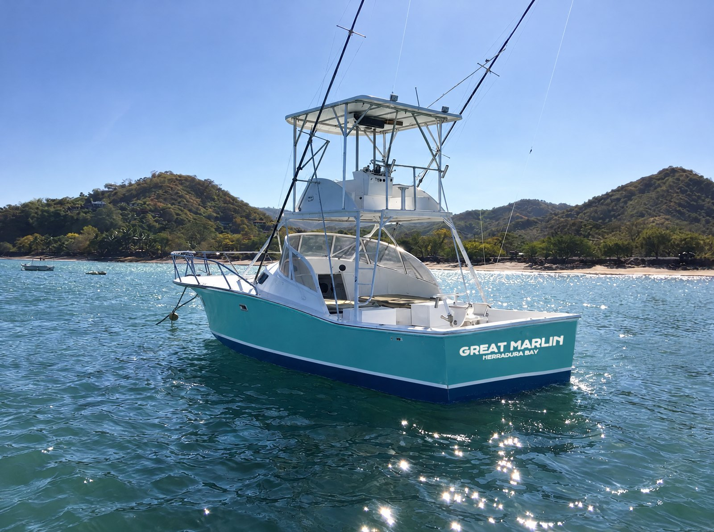

What you'll fight it on
Every rod, reel and rig aboard, listed — because “all gear included” is doing a lot of work in every charter listing you have read, and you should get to see what it means on this boat.
Every listing says gear included. Almost none says what it is.
You choose a charter from a price, a photo of a sailfish, and a promise that the gear is included. What gear? The listing never says. Tackle is the one place a corner gets cut invisibly, because no guest can check it from a phone — and the moment you find out is the moment something big is already hooked.
So here is ours, itemized. Not because you need to know a lever drag from a doorknob by Thursday — the crew handles all of it — but because the boats that are proud of their tackle will list it, and the boats that will not have their reasons.
The standing rule stays the standing rule: bring nothing. Everything on this page is aboard and included on every trip. If you own a reel you love, bring it and the crew will rig it — the rest of what to pack, which is mostly sunscreen and dollars, is on the first-day page.
And all of it gets the same treatment: fresh water every evening, rigs retied, drags checked. Salt is trying to kill this gear all day, every day. It does not get the chance.
- 01 The reels Thirty-pound class · lever drag Lever drag means the strike setting is dialed in by hand before lines off, not argued with mid-fight — when a sailfish eats, the number is already right. Thirty-pound class is the standard for sails on this coast: enough to end the fight while the fish is still strong, light enough that it was a fight at all.
- 02 The rods Stand-up · matched set A matched set, so whichever rod goes off, it is the same fight with the same manners. Nothing in the spread is a spare from another decade. By the time the crew puts one in your hands, the argument about equipment is already over.
- 03 The heavy rig A fifty-wide · the blind strike Most days it rides along and never fires. But blue marlin crash sailfish spreads unannounced, and on the day one does, the fifty is the difference between a long fight and a short story about the reel that emptied.
- 04 The line Fresh mono · checked daily Monofilament stretches, and that stretch is what keeps a circle hook pinned through every jump. Line is the cheapest thing on the boat to replace and the most expensive thing to lose a fish to — which tells you exactly where a corner-cutting operation cuts first.
The fish does not care what the reel cost. You will, about a minute after it eats.
The whole case for listing the tackle, in one sentence
- 01 Circle hooks The law — and the choice With natural bait, circle hooks are mandatory in Costa Rica — written into the sportfishing statute. They would be our rig if the law said nothing: a circle hook finds the corner of the jaw instead of the gut, the fish swims off strong, and the release actually means something.
- 02 The leaders Mono, tied fresh Same statute: natural bait runs on monofilament leader, not wire. Mono lets the ballyhoo swim like it means it. A wahoo's teeth will cost us a rig now and then — that is the trade, and we take it every day.
- 03 The ballyhoo Rigged before you wake The pitch bait. Dozens are rigged on circle hooks before lines-off and re-rigged all day as fish and water use them up. When a sail comes up hot on a teaser, one of these drops into the hole where the teaser was.
- 04 Dredges & teasers Hookless · pure theatre Neither carries a hook. Their whole job is to tell a lie about a school of bait leaving the neighborhood. The sailfish comes up to check, the lie gets pulled away, and the switch happens — the full choreography is on the first-day page.
The other half of the arsenal never trolls.
- 01 Spinning gear Heavy · built for surface work Roosterfish, cubera and jacks are hunted by casting at the rocks, not dragging a spread. Stout spinning outfits with the backbone to turn a fish that is trying very hard to get back inside the structure it just came out of.
- 02 Poppers & surface plugs The strike you watch A cupped face that throws water on every sweep. When a roosterfish comes up under it with its comb out of the water, you will understand why inshore people are the way they are.
- 03 Where it fishes The half day · the way home This is the gear the inshore half day runs on, and it comes out again on the run home from offshore when the beach looks right. The honest arithmetic on half day versus full day is on the first-day page.
Ask about the gear before you're holding it.
If you know tackle, grill us — we enjoy it. If you don't, you never need to: the crew sets every rig and hands you the rod at the only moment that matters. Email works too.